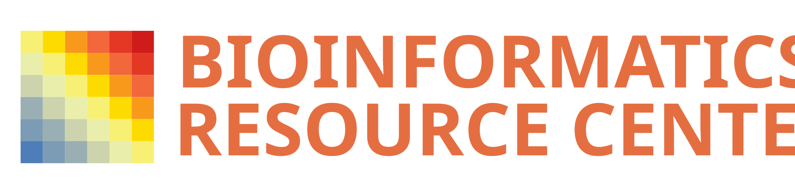

Introduction to R

Course Overview
This course introduces R and statistical programming.
The course consists of 2 sessions: the first on basic R data types and data input/output, and the second on conditional branching, loops, functions and scripts. Each session is presented as HTML slides and as a single-page document. Exercises and answer sheets are included after each subsection to practice techniques and to provide future reference examples.
Course material and exercises are available to view as rendered HTML at https://rockefelleruniversity.github.io/Intro_To_R_1Day/. All material is available to download under GPL v2 license.
Course Integrity
This course is compiled automatically on 2026-09-23

The course is tested and available on MacOS, Windows and Ubuntu Linux for R version 4.3.3 (2024-02-29)

The course is also tested against every major R release since 3.5 (3.5 → 4.5) on Linux

Previous versions of this course are listed on the releases page.
Setting up
System Requirements
Install R
R can be installed from the R-project website.
The R website can be found here http://www.r-project.org/. This website has all the latest information about R updates, conferences and installation
You can use this direct links to the install for each major OS:
Install RStudio
RStudio can be installed from the RStudio website.
http://www.rstudio.com/
RStudio can be downloaded for all platforms at the link below
https://rstudio.com/products/rstudio/download/
Install required R packages
R Packages can be installed from the course package or from CRAN/Bioconductor. Once R and RStudio is installed, you can copy and paste these install commands into lower left pane of RStudio which should be labelled “Console”. If you run into any errors, do this one line at a time.
install.packages('BiocManager')
install.packages('remotes')
BiocManager::install('RockefellerUniversity/Intro_To_R_1Day')install.packages('BiocManager')
BiocManager::install('methods')
BiocManager::install('rio')For an environment matching the one this course was built and tested against, use the Bioconductor Docker image, pinned to the Bioconductor release used at compile time. Docker must be installed; run this in a terminal:
docker run -e PASSWORD=changeme -p 8787:8787 bioconductor/bioconductor_docker:RELEASE_3_18Then open http://localhost:8787 (username rstudio, password changeme) and install the course in the RStudio console:
install.packages('BiocManager')
BiocManager::install('RockefellerUniversity/Intro_To_R_1Day')Download the material
Clicking this link allows you to download all the course material including the code and slides. It also contains additional files we may use in the training.
The Presentations
Introduction to R, Session 1
This section focuses on R basics: simple data types, working with objects, and reading and writing data.
Session sections:
- Background of R and RStudio
- Data types: vectors, matrices, factors, data frames and lists
- Coercing data classes and working with objects
- Reading and writing data
Links to presentations:
The html slide presentation can be found at this link Slide
The single page html presentation can be found at this link Single Page
The code use in the presentations can be found at Code
The notebook used to make the presentations can be found at Notebook
Introduction to R, Session 2
In session 2, programmatic techniques such as conditional branching, looping and writing your own functions are introduced. The session includes longer exercises and shorter slide decks, so more time should be allocated to exercises in this session.
Session sections:
- Conditional branching and loops
- Custom functions
- Installing and loading libraries
- Writing scripts
- Getting help
Links to presentations:
The html slide presentation can be found at this link Slide
The single page html presentation can be found at this link Single Page
The code use in the presentations can be found at Code
The notebook used to make the presentations can be found at Notebook
Getting help
Course help
For advice, help and comments for the material covered in this course please contact us at the issues page associated to this course.
The link to the help pages can be found here
General Bioinformatics support
If you would like contact us about general bioinformatics advice, support or collaboration, please contact us the Bioinformatics Resource Center at brc@rockefeller.edu.